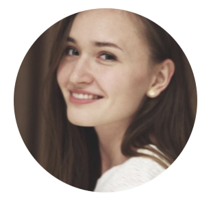

|
Hi! I am a ML/NLP engineer working on LLMs, evaluation, and AI-powered products. I hold a PhD in Computer Science from Instituto Superior Técnico (SARDINE lab, 2024), where I was supervised by André F. T. Martins and Chrysoula Zerva. Currently building Chess Baby Steps, an AI-powered chess trainer. Based in Lisbon, Portugal. |
 |
{kind=link}
|
|
|
My doctoral research focused on the robustness of NLG evaluation models and on methods that quantify and communicate the uncertainty of their outputs. In particular, I worked on uncertainty-aware MT evaluation, aiming for trustworthy systems that are robust to the variation observed across different languages and domains. I co-authored widely used COMET variants (COMET-22, CometKiwi), with 1000+ citations on the corresponding EMNLP/WMT publications. After the PhD I moved to the applied side. I worked on adapting LLMs for low-resource language pairs, and currently I'm building my own AI products end-to-end (such as Chess Baby Steps) and evaluating LLM-based systems in production. Before joining IST, I received a MSc and BSc in Computer Science at CS HSE in Moscow, Russia. When not at my computer, I enjoy playing chess! |
|
|

|
Founder & Engineer; 2026 - present chessbabysteps.com An AI-powered chess trainer that turns your losses into personalized practice: it pinpoints your losing patterns and generates custom puzzles, opening curricula, and tactical drills from positions you misplayed in your own games. Built end-to-end solo (LLMs + Stockfish, full-stack web app), and developed in the open with a strong feedback loop from my TikTok community. |
|
|
| • March 2026: Launched Chess Baby Steps, an AI-powered chess trainer that turns your losses into personalized practice. |
| • June 2024: Defended my PhD thesis with distinction at Instituto Superior Técnico! |
| • June 2023: Our work is presented at EAMT in Tampere, Finland. |
| • Apr 2023: "BLEU Meets COMET: Combining Lexical and Neural Metrics Towards Robust Machine Translation Evaluation" got accepted to EAMT 2023! |
| • Dec 2022: Presenting a poster at EMNLP in Abu Dhabi, UAE. |
| • Nov 2022: Participating in a poster session at CMU Portugal 2022 Summit. |
| • Oct 2022: "Disentangling Uncertainty in Machine Translation Evaluation" got accepted to EMNLP 2022! |
| • June 2022: Research Summer Internship at CMU within the scope of the MAIA project! |
| • Nov 2021: Presenting at EMNLP WMT21 workshop in Punta Cana, Dominican Republic. |
| • Aug 2021: "Uncertainty-Aware Machine Translation Evaluation" got accepted to EMNLP 2021! |
| • Sep 2020: Starting my PhD at IST under the scope of a collaborative project MAIA (Multilingual AI Agent Assistants). |
| • July 2019: Applied AI Research Summer Internship at Unbabel! |
|
|
|
Taisiya Glushkova, Chrysoula Zerva, André F. T. Martins EAMT, Tampere, Finland; June 2023 [ ACL Anthology / poster ] |
|
Chrysoula Zerva, Taisiya Glushkova, Ricardo Rei, André F. T. Martins EMNLP, Abu Dhabi, UAE; December 2022 [ ACL Anthology / poster ] |
|
Ricardo Rei, José GC De Souza, Duarte Alves, Chrysoula Zerva, Ana C Farinha, Taisiya Glushkova, Alon Lavie, Luisa Coheur, André F. T. Martins EMNLP WMT, Abu Dhabi, UAE; December 2022 [ ACL Anthology / poster ] |
|
Ricardo Rei, Marcos Treviso, Nuno M. Guerreiro, Chrysoula Zerva, Ana C Farinha, Christine Maroti, José GC De Souza, Taisiya Glushkova, Duarte Alves, Alon Lavie, Luisa Coheur, André F. T. Martins EMNLP WMT, Abu Dhabi, UAE; December 2022 [ ACL Anthology ] |
|
Taisiya Glushkova, Chrysoula Zerva, Ricardo Rei, André F. T. Martins EMNLP Findings, Punta Cana, Dominican Republic; November 2021 [ ACL Anthology / slides ] |
|
Chrysoula Zerva, Daan van Stigt, Ricardo Rei, Ana C Farinha, Pedro G. Ramos, José GC De Souza, Taisiya Glushkova, Miguel Vera, Fabio Kepler, André F. T. Martins EMNLP WMT, Punta Cana, Dominican Republic; November 2021 [ WMT21 / poster ] |
|
Ricardo Rei, Ana C Farinha, Chrysoula Zerva, Daan van Stigt, Craig Stewart, Pedro G. Ramos, Taisiya Glushkova, André F. T. Martins, Alon Lavie EMNLP WMT, Punta Cana, Dominican Republic; November 2021 [ WMT21 / poster ] |
| Credits to Jon Barron for the template, thanks! |